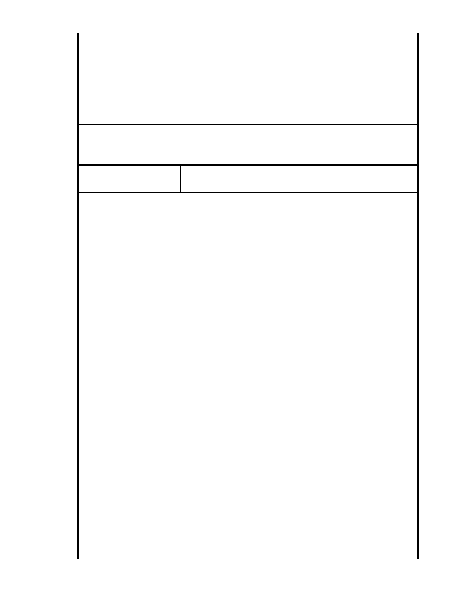

權益。（詳 960713 第二次討論會議紀錄）
2、為避免出入口過多影響成功路交通，基地出入口應以配置一處為原
則。（詳 960713 第二次討論會議紀錄）
陳情意見：
計劃區內應設置道路、大型車停車場等必要之交通設施，並應實施交通
影響評估與現況交通調查資料。
建議辦法
市 府 說 明 相關陳情意見將納入本案審查人民意見，依法定程序辦理。
委 員 會 決 議 同編號 1。
編號
陳情理由
孫文郁（99.12.2 於本會網站傳送資料、市長信
66
陳情人
箱（ MA201012030047 ））
陳情案名：
「變更台北市內湖區成功路 5 段大湖公園北側部份保護區及道路用地為
社會福利特定專用區主要計劃案」及「擬定台北市內湖區成功路 5 段大
湖公園北側社會福利特定專用區細部計劃案」
事實：
一、未討論開發量體、配置等細部構想
本案有關開發量體、配置等細部構想似乎一直都還未被深入討論
二、細部計畫缺開發量體、配置等細部構想
依 99 年 11 月所提細部計劃內容缺開發量體、配置等細部構想
理由：
一、蘇委員瑛敏
依內政部審議要求，主要計畫送審時，細部計畫亦應一併報告供參，本
案有關開發量體、配置等細部構想似乎一直都還未被深入討論，建議應
予以納入討論（詳 951204 第七次專案小組審查會議紀錄）。
二、郭委員肇立
本案若從視覺上來檢視其量體之適宜性時，基地北側兩旁山谷原有之視
覺軸線被本案主建物所遮擋而喪失其視覺權利，就自然景觀而言該量體
就是一個很大的阻礙。（詳 960614 第一次討論會議紀錄）
三、姚委員仁喜
綜合建議希望朝北基地儘量復育、南基地可以建設的方式，來進行量體
的平衡與縮減。（詳 960713 第二次討論會議紀錄）
四、林兼主任委員崇一
從成功路上視之，怎麼蓋都看不到後面，如北基地能少蓋一些，視覺上
的感覺應該會好一點。（詳 960713 第二次討論會議紀錄）
陳情意見：
北基地儘量復育、南基地可以建設的方式，開發量體、配置等細部構想
應納入都市計畫審議討論，以確保視覺環境品質。
- 62 -